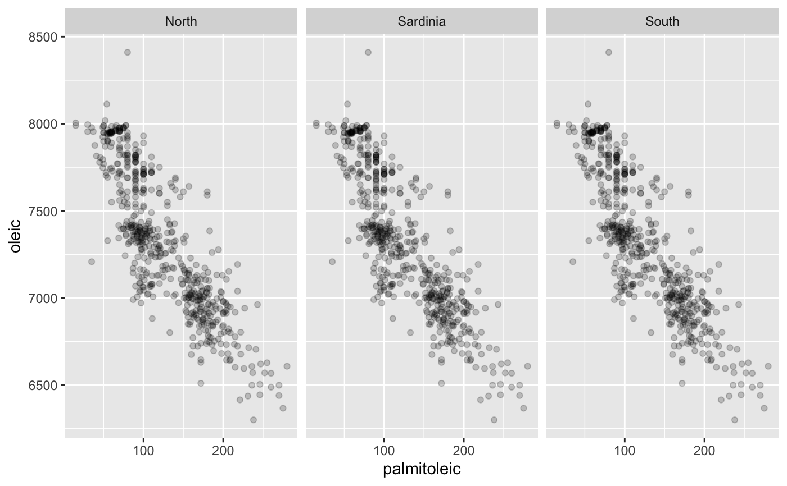
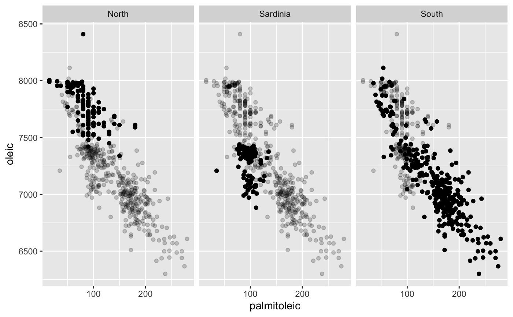
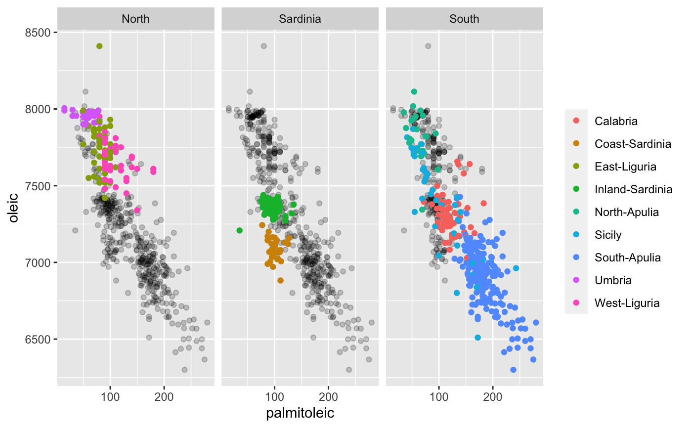
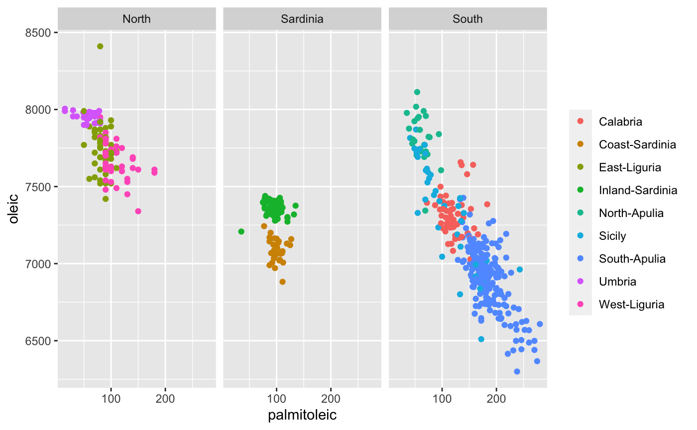

facetshade.RdThis function makes it possible to create ggplots using facet_grid with a plot of the complete data in the background of each facet.
There are two options: If geom is specified then the background data is put into a separate layer. The original data is stored in the main object. The other option is to not specify a geom. In this case the modified data is stored in the main body. See examples.
facetshade( data, mapping, f, geom, geom.mapping, bg.all = TRUE, keep.orig = FALSE, ...)
| data | The dataframe used for the background plots in the first layer. |
|---|---|
| mapping | The aesthetic mapping conctructed via aes. |
| f | The formula specifying the grid for facet_grid or a facet/wrap. |
| geom | The geom used for the shade. |
| geom.mapping | Aesthetics for the shade. |
| bg.all | Whether or not to use all data points for each background plot. If |
| keep.orig | Logical. Whether to keep the original faceting variables defined by |
| … | Further arguments for the background layer or the main ggplot object. |
A ggplot object.
# produces a modified data.frame mdata and returns: # ggplot(data = mdata, mapping, ... ) + facet_grid(f) require(scales) require(ggplot2)#># facetshade object: fs1 <- facetshade( data = olives, aes(x = palmitoleic, y = oleic), f = .~Region ) # only the background-data fs1 + geom_point( colour = alpha(1, 0.2) )# the actual data added in a second layer: fs1 + geom_point( colour = alpha(1, 0.2) ) + geom_point( data = olives )# now again with colours: fs1 + geom_point( colour = alpha(1, 0.2) ) + geom_point( data = olives, aes(colour = Area) )# a different geom for the background-plot: fs1 + geom_density2d(colour=alpha(1,0.1)) + geom_point( data = olives, aes(colour = Area) )#> Warning: Computation failed in `stat_density2d()`: #> there is no package called ‘isoband’#> Warning: Computation failed in `stat_density2d()`: #> there is no package called ‘isoband’#> Warning: Computation failed in `stat_density2d()`: #> there is no package called ‘isoband’# NOT RUN { # OPTION 2: specify geom in facetshade call: fs1b <- facetshade( data = olives, aes(x = palmitoleic, y = oleic), f = .~Region , geom = geom_point) fs1b + geom_point(aes(colour = Area)) # }# compare with complement: fs2 <- facetshade( data = olives, aes(x = palmitoleic, y = oleic), f = .~Region , bg.all = FALSE) fs2 + geom_density2d(colour=alpha(1,0.1)) + geom_point( data = olives, aes(colour = Area) )#> Warning: Computation failed in `stat_density2d()`: #> there is no package called ‘isoband’#> Warning: Computation failed in `stat_density2d()`: #> there is no package called ‘isoband’#> Warning: Computation failed in `stat_density2d()`: #> there is no package called ‘isoband’# NOT RUN { # OPTION 2: specify geom in facetshade call: fs2b <- facetshade( data = olives, aes(x = palmitoleic, y = oleic), f = .~Region , geom = geom_density2d, bg.all = FALSE) fs2b + geom_point(aes(colour = Area)) # }# a second dataset:# NOT RUN { data(EURO4PlayerSkillsSep11, package="SportsAnalytics") e4 <- subset(EURO4PlayerSkillsSep11,Attack > 0 & Defence > 0) fs3 <- facetshade( data = e4, aes(x = Attack, y = Defence), f = .~Position , compare.all = TRUE) fs3 + geom_point( colour = alpha(1, 0.1) ) + geom_point( data = e4, aes(colour = Position) ,alpha=0.3) fs3 + geom_bin2d( colour = alpha(1, 0.1) ) + geom_point( data = e4, aes(colour = Position) ,alpha=0.3) # now with two facet variables fs4 <- facetshade( data = e4, aes(x = Attack, y = Defence), f = Position~Side , compare.all = TRUE) fs4 + geom_point( colour = alpha(1, 0.1) ) + geom_point( data = e4, aes(colour = Position)) # }# NOT RUN { library(FinCal) sh13 <- get.ohlcs.google(symbols=c("AAPL","GOOG","IBM", "MSFT"), start="2013-01-01",end="2013-12-31") # OPTION 1 ------------ require(reshape2) SH13 <- data.frame(date = as.Date(sh13$AAPL$date), sapply(sh13,"[" ,"close",USE.NAMES=TRUE)) names(SH13) <- c("date",names(sh13)) SH13[,-1] <- apply(SH13[,-1], 2, function(x) 100*x/x[1]) SH13am <- melt(SH13, id="date") # OPTION 2 ------------ #SH13am <- do.call(rbind, # mapply(function(z,y){ # data.frame( # date = as.Date(z$date), # value = 100*z$close/z$close[1], # variable = y) # } , z = sh13, y = names(sh13), SIMPLIFY = FALSE)) # --------------------- # original plot from GDAR: ggplot(SH13am, aes(date, y=value, colour=variable,group=variable)) + geom_line()+ xlab("") + ylab("") + theme(legend.position="bottom") + theme(legend.title=element_blank()) # facetshade: # compare to "average" of others: facetshade(SH13am,aes(x=date, y=value),f = .~variable, bg.all = FALSE) + geom_smooth(aes(x=date, y=value),method="loess",span = 1/28) + geom_line(data=SH13am,aes(colour=variable),show_guide=FALSE) + xlab("") + ylab("") # compare to all others facetshade(SH13am,aes(x=date, y=value), f = .~variable, bg.all = FALSE,keep.orig = TRUE) + geom_line(aes(x=date, y=value,group=orig.variable),colour = alpha(1,0.3)) + geom_line(data=SH13am,aes(colour=variable),show_guide=FALSE, size = 1.2) + xlab("") + ylab("") # --- parallel coordinates --- # sc <- scale(olives[,3:10]) # OPT: order by var ord <- order(apply(sc,2,sd)) sc <- sc[,ord] require(scales) # OPT: align at median sc <- apply(sc,2,function(z) rescale_mid(z, mid = median(z,na.rm=TRUE))) require(reshape2) require(ggplot2) msc <- melt(sc) msc$Area <- olives$Area f1 <- facetshade(msc,aes(x=Var2,y=value,group=Var1),f=.~Area, bg.all = FALSE) f1+geom_line(alpha=0.05)+ geom_line(data=msc,aes(colour=Area),alpha=0.2)+ facet_wrap(f=~Area,nrow=3) # }# NOT RUN { # TESTCODE: instead of creating a new object # a shade layer is added to an existing ggplot # NOTE: function CHANGES the object! # highlighting + alpha pp0 <- ggplot()+geom_point(data = olives, aes(x = palmitoleic, y = palmitic), colour = 2) + facet_wrap(~Area, ncol = 3) extracat:::facetshade2(pp0, alpha = 0.1, colour = 1) # colours for both, alpha for shade pp1 <- ggplot()+geom_point(data = olives, aes(x = palmitoleic, y = oleic, colour = Area)) + facet_grid(.~Region) extracat:::facetshade2(pp1, alpha = 0.1) # different geom and colour for shade pp2 <- ggplot()+geom_point(data = olives, aes(x = palmitoleic, y = oleic, colour = Area)) + facet_grid(.~Region) extracat:::facetshade2(pp2, geom = geom_density2d, mapping = aes(colour = NULL), colour = 7) # smooth over points shade with matching colours pp3 <- ggplot()+geom_smooth(data = olives, aes(x = palmitoleic, y = oleic, colour = Region)) + facet_grid(.~Region) extracat:::facetshade2(pp3, geom = geom_point, mapping = aes(colour = orig.Region), keep.orig = TRUE) # }